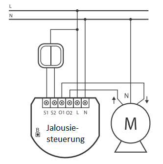

FIB_FGR-221
Firmware Version : 1.3 |
 |
Kurzinfo
Die Inklusion erfolgt durch dreifachen Schaltimpuls am steuernden analogen Lichtschalter oder alternativ durch Einfachklick auf den kleinen Schalter am Gehäuse.
Weitergehende Informationen finden sich in den jeweiligen Abschnitten dieses Handbuches.
Was ist Z-Wave?
Dieses Produkt entspricht dem Z-Wave-Standard. Z-Wave ist der internationale Funkstandard zur Kommunikation von Geräten im intelligenten Haus. Z-Wave-Geräte funken in Europa auf der Frequenz von 868.42 MHz.Z-Wave ermöglicht eine sichere und stabile Kommunikation indem jede Nachricht vom Empfänger rückbestätigt wird (Zweiwege-Kommunikation) und alle netzbetriebenen Geräte Nachrichten weiterleiten (Routing) können, wenn eine direkte Funkbeziehung zwischen Sender und Empfänger gestört ist.
Dank Z-Wave können Produkte unterschiedlicher Hersteller miteinander in einem Funknetz verwendet werden. Damit ist auch dieses Produkt mit beliebigen anderen Produkten anderer Hersteller in einem gemeinsamen Z-Wave Funknetz einsetzbar.
Z-Wave unterscheidet zwischen Controllern und Slaves. Slaves sind entweder Sensoren S, die Daten ermitteln oder Aktoren A, die Aktionen ausführen (Sensoren und Aktoren sind mitunter in einem Gerät vereint). Controller sind entweder statische netzgespeiste Controller C (auch IP-Gateways genannt) oder mobile batteriebetriebene Controller (Fernbedienungen, Batteriewandschalter)R. Damit ergeben sich eine Reihe prinzipieller Kommunikationsmöglichkeiten in einem Z-Wave-Netz:

- Controller steuern Aktoren.
- Aktoren melden Änderungen ihres Schaltzustandes
- Sensoren melden Messwerte oder Statusänderungen an Controller
- Sensoren steuern Aktoren direkt bei Ereignissen
- Aktoren steuern andere Aktoren
- Fernbedienungen erzeugen Ereignisse in einem statischen Controller, die zum Beispiel zum Steuern von Szenen genutzt werden
- Fernbedienungen steuern Aktoren
Controller können in einem Z-Wave Netzwerk zwei unterschiedliche Rollen einnehmen. Es gibt immer genau einen Primärcontroller der das Netzwerk steuert und Geräte in das Netzwerk inkludiert oder aus dem Netzwerk exkludiert. Dieser Controller kann weiter Nutzerfunktionen - zum Beispiel Tasten - besitzen. Alle anderen Controller mit Nutzerfunktionen erfüllen keine Managementaufgaben. Sie heißen Sekundärcontroller. Trotzdem verfügen sie - sozusagen als Backup - über alle notwendigen Informationen über das Netz. Das Übersichtsbild zeigt, das - batteriegestützt - Sensoren nicht direkt mit - batteriebetriebenen - Fernbedienungen kommunizieren. Sie senden nur Daten an statische Controller oder steuern Aktoren direkt.
Produktbeschreibung
Der Fibar-Steuereinsatz ermöglicht die Nachrüstung einer Standard-Elektroinstallation zur Steuerung von Motoren für Jalousien etc. zu einem intelligenten Z-Wave-basierten System. Das Gerät wird in einer Wanddose direkt hinter dem dort bereits befindlichen konventionellen Schalter platziert. Der Schalter schaltet den Verbraucher nun nicht mehr direkt, sondern liefert nur noch ein Steuersignal zum Fibar-Gerät, das wiederum den Verbraucher steuert. Diese Steuerung erfolgt entweder über den lokalen Schalter oder über Funk. Dieses Produkt funktioniert mit jeder Schalterserie und jedem Design, wenn in der Einbaudose genügend Platz zur Installation vorhanden ist. In großen 65 mm tiefen Dosen sollte dies regelmäßig der Fall sein. In kleineren Dosen (z.B. 45 mm) hängt die Einsatzmöglichkeit von der benötigten Tiefe des konventionellen Schalters sowie vom Platzbedarf der gegebenenfalls ebenfalls in der Dose befindlichen Elektroverbinder ab. Dieses Gerät ist für ein Dreileitersystem vorgesehen, dass heisst, es muss zur Installation ein Neutralleiter (blau) vorhanden sein.
Sicherheitshinweis
Lesen Sie dieses Handbuch vor der Installation!
Achtung! Dieses Gerät wird mit 230 V Netzspannung betrieben. Beachten Sie die Sicherheitshinweise während der Installation. Vor Beginn der Installation müssen alle Anschlussleitungen potentialfrei sein. Weiterhin muss sichergestellt sein, dass während der Installation niemand die Spannung wieder zuschalten kann (Sicherung wieder aktivieren). Elektrische Arbeiten dürfen nur von einer Elektrofachkraft in Übereinstimmung mit den geltenden Regeln und Vorschriften durchgeführt werden.
Verwenden Sie das Gerät auf keine andere Weise als im Handbuch angegeben. Der Hersteller übernimmt keine Garantie für unsachgemäße Bedienung.
Installationsanleitung
Der Schalteinsatz passt in normale Europäische Wanddosen mit 60 mm Durchmesser und ist mit 15 mm Höhe sehr klein, weshalb er auch hinter einem traditionellen Wandschalter montiert werden kann. Dieser Wandschalter dient dann als externer Steuerschalter zum Schalter von Lasten - die Schaltrelais selbst sind im Einsatz realisiert.
Die Anschlussklemmen N und L werden direkt mit den Zuleitungen des Stromnetzes verbunden. Die drei Leitungen vom Motor werden wie im Bild angeschlossen.

Es ist möglicht, aber nicht zwingend notwendig, eine lokale Bedienung des Schalters durch einen direkt auf die Wanddose installierten traditionellen Schalter zu realisieren. Dazu dienen die Anschlussklemmen S1, S2 und Sx.
Achtung: An diese Anschlussklemmen darf kein Netzstrom angelegt werden. Dies führt sofort zur Zerstörung des Schalters.
Die lokale Steuerung kann durch einen einfachen Doppel-Kippschalter (bistabil) oder einen Doppeltaster (monostabil) erfolgen. Der angeschlossene Schaltertyp muss nach der Inklusion über das Setzen des Konfigurationsparameter 14 gewählt werden. Die Werkseinstellung lautet auf Taster. Der lokale Steuerschalter wird wie in den oben angegebenen Schaltungen an den Schalter angeschlossen. Sollte ein bistabiler Schalter angeschlossen werden, muss der Schalter ausgeschaltet bleiben, solange der Steuerschalter nicht in das Z-Wave Netz inkludiert wurde.
Achtung: Der Schalteinsatz besitzt eine automatische Endlagenerkennung. Dazu muss der Einsatz bei Betrieb mit einem Rohr-Motor mit Endlagenschaltern verbunden sein. Ein Testbetrieb ohne Motor führt zu falschem Verhalten.
Verhalten des Gerätes im Z-Wave Netz
I Im Auslieferungszustand ist das Gerät mit keinem Z-Wave-Netz verbunden. Damit es mit anderen Z-Wave Geräten kommunizieren kann, muss es in ein bestehendes Z-Wave Netz eingebunden werden. Dieser Prozess wird bei Z-Wave Inklusion genannt. Geräte können Netzwerke auch wieder verlassen. Dieser Prozess heißt bei Z-Wave Exklusion. Beide Prozesse werden von einem Controller gestartet, der dazu in einen Inklusion- bzw. Exklusion-Modus geschaltet werden muss. Das Handbuch des Controllers enthält Informationen, wie er in diese Modi zu schalten ist. Erst wenn der Controller des Z-Wave Netzes im Inclusion-Modus ist, können Geräte hinzugefügt werden. Das Verlassen des Netzes durch Exklusion führt zum Rücksetzen dieses Gerätes in den Auslieferungszustand.
Das Gerät wird durch dreifachen Schaltimpuls am steuernden analogen Lichtschalter oder alternativ durch Einfachklick auf den kleinen Schalter am Gehäuse inkludiert oder excludiert, je nachdem, ob sich der entsprechende Controller im Inklusion-Modus oder Exklusion-Modus befindet.
Bedienung des Gerätes
Der Jalousiesteuereinsatz ermöglicht das Steuern von 230 V Rohrmotoren. Ein lokal angeschlossener konventioneller Schalter kann den Schalteinsatz direkt bedienen. Ist dieser Schalter ein konventioneller Tastschalter, wird mit jedem Tastimpuls der Schalter entweder ein- oder ausgeschaltet. Bei Kipptastern erfolgt die Bedienung genauso, nur dass der Schalter nach betätigtem Schaltimpuls manuell wieder in den Ausgangszustand AUS gesetzt werden muss. Eine Schaltwippe des Doppelschalters fährt den Motor in die eine, die andere Schaltwippe in die andere Endlage.
Der Schalteinsatz kann seinen Status an einen Controller senden (Kommunikationsart 2) und andere Aktoren steuern (Kommunikationsart 5). Eine Steuerung des Schalters ist von jedem Z-Wave Gerät aus möglich (Kommunikationsarten 1,4 und 7). Ein eventuell vorhandener zweiter Schalter dient nicht der Steuerung des lokalen Schalters, sondern nur der Fernsteuerung von anderen Aktoren nach Kommunikationsart 5.
Assoziationen - wie werden andere Geräte gesteuert?
A Z-Wave Geräte können andere Geräte direkt steuern. Diese direkte Steuerung heißt in Z-Wave Assoziation. In den steuernden Geräten muss dazu die Geräte-ID des zu steuernden Gerätes hinterlegt werden. Dies erfolgt in sogenannten Assoziationsgruppen. Eine Assoziationsgruppe ist immer an ein Ereignis im steuernden Gerät gebunden (Tastendruck oder Auslösen eines Sensors). Bei Eintritt dieses Ereignisses wird an alle in einer Assoziationsgruppe hinterlegten Geräte ein Steuerkommando gesendet.
Assoziationsgruppen:
| 1 | externer Schalter 1 (max. Anzahl Geräte: 16) |
| 2 | externer Schalter 2 (max. Anzahl Geräte: 16) |
| 3 | (max. Anzahl Geräte: 1) |
Konfigurationseinstellungen
Z-Wave Produkte können direkt nach der Inklusion im Netz verwendet werden. Durch Konfigurationseinstellungen kann das Verhalten des Gerätes jedoch noch besser an die Anforderungen der Anwendung angepasst und zusätzliche Funktionen aktiviert werden.
WICHTIG: Manche Steuerungen erlauben nur die Konfiguration von vorzeichenbehafteten Werten zwischen -128 und 127. Um erforderliche Werte zwischen 128 und 255 zu programmieren, muss der gewünschte Wert minus 256 eingegeben werden. Beispiel: um einen Parameter auf einen Wert von 200 zu setzen, müsste der Wert 200-256 = -56 eingegeben werden, wenn nur positive Werte bis 128 akzeptiert werden. Bei Werten von 2 Byte Länge wird die gleiche Logik angewandt: Werte über 32768 werden als negative Werte angegeben
| Wert | Beschreibung |
|---|---|
| 0 | weder AUS noch EIN werden ausgeführt |
| 1 | Nur AUS wird ausgeführt |
| 2 | Nur EIN wird ausgeführt |
| 255 | sowohl AUS als EIN werden ausgeführt (Voreingestellt) |
| Wert | Beschreibung |
|---|---|
| 0 | aktiviert (Voreingestellt) |
| 1 | deaktiviert |
| Wert | Beschreibung |
|---|---|
| 0 | Monostabiler Schalter (Voreingestellt) |
| 1 | Bistabiler Schalter |
| Wert | Beschreibung |
|---|---|
| 1 — 153 | (Voreingestellt 22) |
| Wert | Beschreibung |
|---|---|
| 0 | Deaktiviert- Schalter reagiert nicht auf Alarm |
| 1 | Jalousie geht runter bei Alarm |
| 2 | Jalousie geht hoch bei Alarm |
| Wert | Beschreibung |
|---|---|
| 0 | Deaktiviert- Schalter reagiert nicht auf Alarm |
| 1 | Jalousie geht runter bei Alarm |
| 2 | Jalousie geht hoch bei Alarm (Voreingestellt) |
| Wert | Beschreibung |
|---|---|
| 0 | Deaktiviert- Schalter reagiert nicht auf Alarm |
| 1 | Jalousie geht runter bei Alarm |
| 2 | Jalousie geht hoch bei Alarm |
| Wert | Beschreibung |
|---|---|
| 0 | Deaktiviert- Schalter reagiert nicht auf Alarm |
| 1 | Jalousie geht runter bei Alarm (Voreingestellt) |
| 2 | Jalousie geht hoch bei Alarm |
Kommandoklassen
Unterstützte Kommandoklassen- Basic (Version 1)
- Configuration (Version 1)
- Multilevel Switch (Version 3)
- Version (Version 1)
- All Switch (Version 1)
- Multi Channel Association (Version 2)
- Basic Window Covering (Version 1)
- Manufacturer Specific (Version 1)
- Powerlevel (Version 1)
- Association (Version 2)
- Binary Switch (Version 1)
Technische Daten
| Stromversorgung | 230V ~50-60 Hz |
| Schaltbare Lasten | 1 kW |
| Schutzklasse | 20 |
| Explorer Frames | Ja |
| SDK | 4.52 |
| Geräteart | Slave with routing capabilities |
| Allgemeiner Z-Wave-Gerätetyp | Multilevel Switch |
| Spezieller Z-Wave-Gerätetyp | Multiposition Motor |
| Router | Ja |
| FLiRS | Nein |
| Firmware Version | 1.3 |
Erläuterung Z-Wave-spezifischer Begriffe
- Controller... ist ein Z-Wave-Gerät mit erweiterten Fähigkeiten zur Verwaltung eines Netzes. Dies sind in der Regel Gateways oder Fernbedienungen. Batteriegespeiste Wandschalter können auch Controller sein.
- Slave... ist ein Z-Wave-Gerät mit erweiterten Fähigkeiten zur Verwaltung eines Netzes. Es gibt Sensoren, Aktoren und auch Fernbedienungen als Slaves.
- Primärcontroller (engl. Primary Controller)... ist der zentrale Netzverwalter des Z-Wave-Netzes.
- Inklusion (eng. Inclusion)... ist der Prozess des Einbindens eines neuen Gerätes ins Z-Wave-Netz.
- Exklusion (engl. Exclusion)... ist der Prozess des Entfernens eines Gerätes aus dem Z-Wave-Netz.
- Assoziation (engl. Association)... ist eine Steuerbeziehung zwischen einem steuernden und einem gesteuerten Gerät. Die Information dazu wird im steuernden Gerät in einer Assoziationsgruppe hinterlegt.
- Wakeup Notifikation (engl. Wakeup Notification) ... ist eine spezielle Funknachricht, mit der ein batteriegespeistes Gerät bekanntmacht, daß es im Aufwachstatus ist und Z-Wave-Nachrichten empfangen kann.
- Node Information Frame... ist eine spezielle Funknachricht, mit der ein Z-Wave-Gerät seine Geräteeigenschaften bekanntgibt.
Entsorgungshinweis
Dieses Gerät enthält keine Batterien.
Das ist ein elektrisches Gerät. Es kann kostenfrei bei entsprechenden Annahmestellen abgegeben werden.